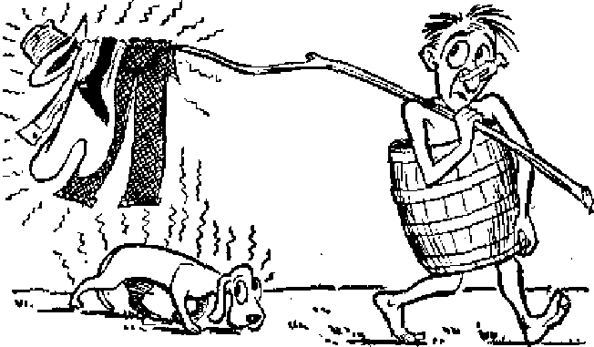

AN thinks he is pretty smart when it comes to defending himself, but in
natural equipment he has nothing on the never-fearful, ever-ready, pistol-packing skunk. In fact, the skunk in many ways
MAY 8. 1951 SEMIMONTHLY
THE MISSION OF THIS JOURNAL
News sources that are able to keep you awake to the vital issues of our times must be unfettered by censorship and selfish interests. “Ayvakel” has no fetters. It recognizes facts, faces facts, is free to publish facts. It la not bound by political ambitions or obligations; ft is unhampered by advertisers whose toes must not be trodden on; it is unprejudiced by traditional creeds. This journal keeps itself free that it may speak freely to you. But It does not abuse its freedom. It maintains integrity to truth.
"Awake 1” uses the regular news channels, but is not dependent on them. Its own correspondents are on all continents, in scores of nations. From the four corners of the earth their uncensoned, on*the-scenes reports come io you through these columns. This joumars viewpoint is not narrow, but is International, It is read in many nations, in many languages, by persons of all ages. Through its pages many fields of knowledge pass in review—government, commerce, religion, history, geography, science, social conditions, natural wonders—why, its coverage is as broad as the earth and as high as the heavens.
“Awake J” pledges itself to righteous principles, to exposing hidden foes and subtle dangers, to championing freedom for all, to comforting mourners and strengthening those disheartened by the failures of a delinquent world, reflecting sure hope for the establishment of a righteous New World.
Get acquainted with “AwakeKeep awake by reading “Awake!"
Published Semimonthly By Watchtower Bible and tract SOCIETY. INC.
117 Adams Street
N. H. Kkoub, President
Printing tfti* Iwie: 870rDOO
Lan|tttn Io which this Hiygufnu h Hlliih«C ttil?—-Afrikaans , English, Finnish, Ger tain,
Norwegian, Spanish. Monthly—Danish, Frentb, Greek, Portuguese, Swedish, Lliiainlan,
Yearly subscription Bite
A U.S., 117 Aduim St., Brooklyn 1, NX 11 Ailtrqlla, 11 Beresford Rd-, Slrathfosld, N.b.W. 8s GuuJl 40 Irwin Ave., Toron Lu 5, Ontario 11 Eulm, 34 Craven Terrarc, Lcunioti, W, 2 Ts Sort Africa, 623 Boston House, Cape Town 7s
Enijrtd as affund-elua matter at Brooklyn, N, Y.
Brooklyn 1, N, Y.t U. S. A.
Grant Suiter, Secretary
Five centu a copy
flatiltfancu should he sent to office in your country In compliance with regulation s to puuantee safe delivery of money. Remittances are accepted at Brooklyn from countries where no office is located, by international money order only. Subscription rates in different eountriis are here stated in heal currency. Notle* «T Kt pl rat ton (with renewal btetik) is sent at leapt two Iibum before subscription expires, Changs of addrm when vent to our office may be expected effective vrtlbln one month. Send your old as well as new address.
Act td March 3, 1S7S. Printed In U. 8. A
CONTENTS
Small Sparks Kindle Mob Action
Famine Rides Through the Earth
The Earth Yields Her Increase’
The Human Body—an Amazing
Social and Economic Life in Skunkdom 14
Forest Fire, the Red Destroyer
Shakespeare^Television’s Prophet?
“Your Word Is Truth”
Clergy Misrepresentation of
Volume XXXII
Brooklyn, N. Y., May 8, <951
Number 9
GREAT forest fires are at first very small. Often a single spark ignites a few dry blades of grass and then the wind and heat fan the flames completely out of control. A pail of water in the beginning would quench it, but if allowed to develop, death and destruction are spread over a vast area. It is the same with hysterical mob violence. Let personal sparks of bitter hatred and intolerant bigotry inflame the emotions of a few whose mentality and reasoning powers are dried up, and the first thing one knows a whole community is ablaze with uncontrollable anger. Just such a case of raging mob hysteria occurred recently up in the hills of Tennessee.
Early Saturday morning, January 20 of this year, Fedd Wiley, Jr., an ordained minister and one of Jehovah’s witnesses, walked down Main street in Crossville, Cumberland county’s seat. From his shoulder hung a white magazine bag advertising Watchtower and Awake! Crossing the intersection, Fedd took his accustomed place near the taxi stand and proceeded to hand out invitations to a public Bible lecture to be given the next day. Directly across the street was Mayor Bill Mayberry’s residence.
Now it so happened that one of the taxicab drivers, a smallish fellow named Johnny Burgess, had a particular spark of hatred in his heart against Jehovah’s witnesses, and this morning he was determined to do something about it. First, he kindled the anger of his cronies: P. G. Garrett, Beecher Poteet, and others. In turn, this core of rowdies began throwing hard looks, then nasty remarks, and finally threats of violence at the harmless witnesses. “If you don’t get, somebody will drag you out of here by the feet,” one of them ^screamed. There were other witnesses on the street by this time. The very low mentality of these ruffians was displayed by their sputtering about the literature of Jehovah’s witnesses being “Communist stuff”. The very magazines being held up had a headline reading, “Communists Fight Jehovah’s witnesses,” the title of an article reporting how the communists in Soviet Germany have banned and persecuted Jehovah’s witnesses.
By nine o’clock a crowd began joining the knot of inflammatory cab drivers as they closed in on one of the witnesses. One of them grabbed an Awake! magazine out of the witness’s hand, while the others became very boisterous in their , profanity and threats. It was a first-rate demonstration of what they were going to do, and it seemed to be staged especially for the benefit of the chief of police, Clayton Shaver, who was present- That was the time and place for the police chief to throw water on the fire and put an end to the unlawful disorder; but no, he refused to do so- As a fire-flghter he was a fizzle!
Community Set Ablaze
Twenty minutes later when the fighting started, Shaver conveniently disappeared into a barber shop, not unlike the fellow who fiddled while Rome burned. Down the street Johnny Burgess and Hollis Patton accosted one of the witnesses while Poteet and Garrett ganged up on another. When the fighting broke up, Poteet transformed himself into a deputy sheriff and proceeded to arrest the witnesses for disturbing the peace. Brought to the courthouse, the witnesses in turn demanded that the real hoodlums be arrested, but the magistrate refused. Likewise the city judge, C. E. Keyes, refused to issue warrants of arrest at that time, saying he hoped the “whole thing would blow over”. Forest fires usually “blow over”, yes, but as they do everything in their path is burned to a crisp.
With public officials altogether indifferent to their duties and even sympathetic toward the mobsters, it was not surprising that during the rest of Saturday the witnesses were attacked several times as they endeavored to carry on their public ministry on the streets of Crossville. That evening about 6 o’clock as the fury of the rioters increased they turned over and damaged a witness’s automobile. Word about the trouble spread like wildfire throughout the Tennessee hills during the night, and it seemed apparent that, come Sunday’s public meeting, the uncontrolled mob would burst into purderous violence. Crossville's puny police force, having refused to put out the fire in its early stages, was completely powerless to cope with the flaming madness. The county sheriff and his handful of deputies were also of little help.
Sure enough, by two o’clock Sunday afternoon there were hundreds of people milling around, and by three o’clock some 500 persons jammed the vicinity of the hall. Somehow, they got the city firehose
And hooked it up, with the intention of giving the witnesses a freezing midwinter dousing, and a few minutes later a couple of trucks pulled up and started handing out guns to the mob. The only staying forces in the end were the out-of-town witnesses and five carloads of state patrolmen who rushed in at the last minute and kept the violence in check.
Constitutional Freedoms Destroyed
It was at this point that Mayor Mayberry entered the picture. His forces being helpless to put down the disturbance, he begged the witnesses to leave town. Then he pleaded with the mob for a bloodless settlement, and after much persuasion they moved back and allowed the witnesses to get into their cars, whereupon they were run out of town, amid raucous jeers.
The next day the mayor and city commissioner M. E. Dorton, the latter one of the “big wheels” of Crossville, met with the witnesses some fifty miles away, in Cookeville, in an effort to persuade them not to return. These men freely admitted that Jehovah’s witnesses had a perfect right to be there, but, lacking backbone and courage to enforce law and order, they were more willing to turn the town over to the mobsters, “Those people run things over there. They always have, and they always will,” wailed the mayor. Such spineless, cowardly officials! Their craven way of fighting a fire is to run from it.
Again the public press, as it has in the past, did its best to fan the flames of hate. Not content with publishing the honest truth about the lawless rioters and the negligent officials, the press reporters stooped down and grabbed up inflammatory lies and hurled these burning embers of hate far and wide. When called to task for their mischief, the’news agencies retracted their statements, but only after the damage had been accomplished.
Let it be said that not everyone in Crossville or Cumberland county was out In the mob or was in sympathy with it. No, not by any means! As Jesus’ prophecy recorded at Matthew 25:31-46 foretold, today sheeplike people are being divided and identified from those having a goatish disposition, and many of the good mountain people of Tennessee are numbered among the Lord’s sheep. Let all of these mild-tempered ones rejoice, for it is to such that the promise of life everlasting in a paradise earth is made.
order of the last Axis aggressors, Germany and Japan. The exacting terms of “unconditional surrender” had been won, but not without paying the fearful price of inheriting in the lands of the conquered prostrate ruin, black void and death. Their food
FROM the fruitful soil of this potentially abundant earth, visualize rolling fields of plentiful golden grain. Matching it might be jovial round faces of laughing contented people of any or all nations, joyous in their lot. Suddenly you are nearly blinded by the furious charge of the red horse and rider of total modern war that leave in their wake blasted, gutted ruin. Then silence while the scene darkens. You look again to see another, a black horse ridden by gaifnt famine swaying madly back and forth through the now wasted fields, gleaning the sordid pickings of war’s remains. Grimly the thin and worn survivors marshal their ranks for a fight to the finish against the new enemy.
This cut from the Apocalyptic vision provided in advance especially to describe the ravages of the wars and their aftereffects of these “last days” portrays well the global war for survival man now wages against hunger and want. This struggle began in earnest in the summer of 1945 following the twin collapse in rapid-fire bins bore a “Mother Hubbardly” barren-* ness; their productive resources were stripped. What could be done next?
Emergency assistance through the United Nations was instituted, but, as 1946 wore into 1947, news releases continued to clock the relentless speed of the third horseman of the Apocalypse.
Roll Call of Victims
From the British Isles: That winter resulted in agricultural losses of eighty minion dollars. Floods added to the peril in Eire.
From France: A crisis in wheat and “Breadless Sundays” proclaimed. An instance was cited where 500 deprived people stole a miller’s flour and distributed it to bakeries.
From Germany: The former Axis cornerstone suffered her “worst food crisis” and economic unrest with strikes and production inefficiency.
From Italy: March, 1946, found this land lowest on the continent in calorie intake, with but 1,330 per day per person. Two thousand two hundred fifty calories is considered the efficient daily minimum and 1,500 the absolute minimum, below which the body feeds on itself.
From Rumania: Mounting crises brought this entire country to the brink of famine. Food riots flared everywhere.
From Yugoslavia: Five million persons were threatened with starvation in the “deficiency areas”. Special emergency relief was requested on the nation's behalf by the United States Embassy.
From India: The annual milk production was found threefold below its minimum nutritional needs. In Calcutta famine was within arm's reach of plenty. Native sections there are alive with beggars and untouchables who roam the streets without rice or millet. There they beg, crawi and die. In the gutters the dogs feast on them—a gruesome mixture of living and dying horror. Yet in 1946, The Flame (London) pointed out that 225,000,000 cows were at hand in India—cows considered sacred to the Hindu religion. A few years before, three million people there perished from famine while stray hundreds of thousands of cattle roamed in their midst!
From Indo-China: Cried the headlines: “Two million lack food, untended dikes portend floods.”
From China: Mass starvation was widespread. In some quarters 500 sl day died from hunger.
From Japan: So severe did the food crisis become in this land of the once proud mikados that for two months in 1947 the daily calorie intake was cut to 997.
From the Philippines: Five areas here had reported actual starvation and the entire domain seemed threatened constantly.
And at the very borders of the United States hunger bares its fangs. The Caribbean area holds such examples as Haiti, and Central America is riddled with deprivation.
Counterattack on Famine
By May of 1947, it was announced that 60,000 surplus Canadian horses had been sent to Europe in cans through the United Nations and that perhaps another 100,000 would be sent in the following two years. Though frowned on by Americans, such filet du cheval has been said to be quite succulent to the French. The H. J. Heinz Company sponsored a baby-food-to-Europe drive, and an anonymous west coast woman contributed her life’s savings for European relief* The American Feline Society meant to do its bit by suggesting the shipment of 1,000,000 “healthy and vigorous American work cats” to Europe to assist in the fight against increasing rodents. However, a true friend of cats in New York wrote the New York Times pleading that this be condemned as endangering the lives of such cats which would provide too great a temptation to hungry and cold Europeans.
On the more serious side, the crushing burden tantamount to feeding the entire world fell upon the shoulders of the United States. Could this one great prosperous “island” bridge the world-wide seas of hunger? She would try. Borrowing its name from the then secretary of state, its founder, the “Marshall Plan” (officially, the “European Recovery Program”) was launched in April, 1948, on a plan designed to run until 1952. Allocated $6,098,000,000 the first year, the plan would depend on Congressional renewals and fresh allotments for succeeding years.
Politics next reared its ugly head. Though invited to initial European discussions on Marshall Plan aid by Britain and France, the Soviet and her satellites had declined. Thereafter they pursued a relentless campaign against the plan through
their propaganda channels. They warned of foul capitalistic propaganda behind every imported American meat ball and pointed to the treacherous hand of Wall Street supposedly mixing every salad bowl.
Wastes and Mismanagement
But the nobler of two causes does not clothe its champion with infallibility, and food wastes, some of them flagrant, threatened the moral security of the American mission. Side by side with terrible reports of global want there have occurred stupefying incidents like these: In Colorado, a pile of wheat a block long, a half block wide and twenty-five feet high is dumped for lack of storage space. Similarly, “at least 10,000,000 bushels of Washington wheat” meets a like fate. Vegetable growers are warned that “at least ten per cent of all fruits and vegetables shipped from farm to market to dealer end in the retail dealer’s trash can’’. Fruit-growing Washington farmers are found fertilizing their land with apples for which they cannot receive a satisfactory price on the market. While presidential pleas for strict food conservation that starving Europeans might be fed echo forth, twenty-two million bushels of potatoes are dumped in a single year. Other foods, not destroyed, are piled up in large government storehouses following government purchase of such “surpluses”. Thus everyone pays for food never used while half the world suffers from malnutrition or starves.
And among the necessities of life included in Marshall planning, how interesting'it is to note $110,000,000 worth of that reliable old staple, typically American dish, tobacco! Justifying it as a 'concession to human nature’, Secretary Marshall left himself open to attack from those who might wonder if instead it is a ‘concession to the human nature’ of American tobacco tycoons who naturally would be interested
MAY 8, 1951
in cultivating future lucrative markets. Naturally!
Three years of Marshall Plan billions have, however, served to stabilize some foreign economies and the food made available thereby has snatched masses from the jaws of starvation. But severe hunger, even starvation, is far from licked. Masses in the Near and Far East reel under its pounding hoofs. Virtually all of Europe is short of food, with Marshall Plan countries a little better off. Furthermore, even the needs of western Europe are growing with its expanding population, which, it is estimated, will reach 280,000,000 by 1952. This “wanting world”, like a great sieve, creates needs faster than they can be filled.
"And There Shall Be Famines”
Modem students of the Bible cannot help but discern in the present recurring food shortages an ever growing international peril menacing the security of the whole world since the outbreak of World War I in 1914. Each year since has seemingly hammered home belief that this factor, coming as foretold with globe-girdling wars and pestilences, is a certain fulfillment of Christ Jesus’ long-range prophecy concerning the “last days”. (Matthew 24:7) For the past thirty-six years these “horsemen” of Revelation, chapter six, have joined hands to crush the nations beneath them.
Secular prophets of modem times have added their forecasts. Thomas Robert Malthus, a British economist of the nineteenth century, dictated the “Malthusian theory” that the earth could never continue to support its increasing population. To him wars and pestilence were merciful alternatives to slower death by starvation. In January, 1949, this general feeling was put in the words of Guy Irving Burch, editor of the Population Bulletin. While elim-
7
mating mention of any “merciful alternatives”, he pointed out that the earth was already over Its head In self-support, and that if everyone were to have a living standard equal to that of the United States, the world population would have to be reduced by two-thirds, or world production would have to step up by 200 per cent.
On the sunnier side, the United Nations’ Foop and Agriculture Organization under its. director general, Norris E. Dodd, is striving to educate the world’s farmers in the ways of deriving the maximum produce from their soil- Already, Dodd has personally circled the world and demonstrated countless improvements in such elementary departments as tools, methods, seed selection, etc- Dodd firmly believes that much can be done to feed the hungry half of the world “with just a little money and just a little brains”.
In the front against famine the modem age has forged a “secret weapon”, the inventive mind of science. Where food does not exist the scientists have sought to create it. Before the last war’s end Germany had made great strides in ersatz foods, and science has exploited this field to the limit in the postwar era, A ton of wood-waste can now be converted into a ton of molasses rich in sugar. This in turn will produce a high-vitamin protein livestock feed by growing yeasts and molds on the sugar. Also, a rich new protein source is being developed through the combination of tiny algae, single-cell fresh-water plants, with yeast cells. A factory designed to produce such manufactured food exists In Jamaica, and turns out five tons of this new food daily.
‘The Earth Yields Her Increase*
To great ends one could go to discuss the fight being made by the world to feed itself. But the more said, the more blank admissions thus uncovered testifying to the falling of the famine scourge upon mankind in just the global way Christ foretold. The two furious rides of the “black horse” following jhe first and s~ pnd world wars have directly affected niore than twice as many persons as the four previous major famines of
1790 and 1877 combined. In his efforts to attain freedom from want man devises many new methods, but all of them, yes even the current contrivances of modern science, are but discoveries of things present all the time. And who put them all there? The farmers, political food administrators or research chemists? No, rather they are the work of the Great Scientist of the universe. He who spread abroad the heavens, formed the earth and put man upon it was never in doubt as to feeding the expanding population meant to comfortably fill it.
Even now we are told that there are on earth about four billion acres of arable land. If it were all properly cultivated and there were no wars, wastes or political corruption to exact their tolls, the mind can readily appreciate what improvements could be made. But Jehovah God need not be limited by simply these resources. Think of the vast desert wastes and wildernesses, not to mention the polar caps that his unlimited power could easily render rich and fertile. When the decisive war of Armageddon has rid the world of demon rule and human competition for global supremacy and the perfect rule of the Prince of Peace extends here, all will see what the earth can truly bring forth.
All will see earth’s perimeter burst forth in abundance never dreamed of. All will behold prosperity’s rich rolling fields of golden grain continue to stand unmarred by war, unscathed by famine. And the happy voices will never be stilled All will be joyful and contented, for “then shall the earth yield her increase”.—Psalm 67:6.
THREE times a day, or oftener, we take food into our systems. It may be meat and potatoes, pork and beans, catsup and hamburger, bacon and eggs, cereal and cream, pie a la mode, strawberry shortcake, or what not. Yes, dayjn and day out, we put into our slmnacKs^aconglomeE-
hqtL frozen, acid^ alkali, fg^mineSs^^d^y^^ rnmsT^Vet/^omehowo r offier, it is all put to good use by the body in mak-
of bile, These glands produce’ secretions which cause chemical changes to take place in the food, which secretions are known as ‘'enzymes’*, that is, fermehts or leay-en.^These enzymes Tira “specific” in that eachj one acts on only one particular kind cf eteraent, known as its “substrate”. These enzymes work as catalysts, in thaj they cause chernicaTchanges toT^ke^place~^TnTuE-stancesiviuioutthent s^^snbeSjjngHg^apagTQ^ the^changeJTuBstanceT
ing tissue and energy for the robust athlete or the delicate fair lady.
Bywhat processissuchavariet^jof suE3anSFnSr^2T^8owiToTurmsirf5od
means^oTTfie^S^SB^J^^6®^ which in the main consists oF*two distinct kinds of activity, the -one mechanical, the other chemical. Both processes take place at the same time and in co-operation with each other, While the mechanical activity, the diqwmg_andjv^lowinj^ojfo(Kl and Jhe peristaltic,action qf th^^jgmach^mid jhe intestines^is nqt_ nearly as simple as it seems, it is the cheirucaiprocessor the ■ I. ** ....... '■ । II ■!!> “_ ...... —
digestive system that is . truly amazing. This chemical activity is carried on by a series of glands, some of which are situated within the walls of and others connected by tubes to, that long muscular tube ^^ro^as the
There are five kinds, of glands involved in the digestive process: the^alivary, the gastric and the intestinal glands, the pancreas, and the liver in its role as producer
Salivary and Gastric Enzymes
The body’s first enzymic activity takes place in the mouth, as the food comes in contact with ptyalin, the enzyme of the salivary glands’ "this enzyme, however, acts only on the starches. Pairs of glands, named according to their location, are found near the ears, under the tongue and in file jaws. Additionally, there are numer-qus_small_glands on jhe innersurface of ffieTips*Tnd^cEeeksTon^nie^tongue7pSate ^djpjS^mxTbgether jheseje^etejibout three ^jounds^ of saliva daily and Tire spurred into action by the sight or smell qfjooS Jdr^3^ touchjD£~fasfe "of^t Tn the mouth. Pleasant mental ainT emotional states stimulate their activity, unpleasant ones inhibit it.
These glands in the human body are specialists, those in the mouth specializing on the starches, whereas the glands in the stomach specialize on proteins. There are two separate and distinct kinds of glands in the stomach, each kind serving a particular purpose. Some 35 million of them inhabit the stomach walls, pouring out their ehzymes rough fiye ^Ulion ducts. These glands fiffiiisinSiepepdrMvIiicRndi-gests proteins and^rgyn^which curdles milk. HoweverT^eaSToftnese can work only in an acid base and so the stomach, that is, these glands, also furnishes this in the form of hydrochloric acid. Like the salivary glands, the glands of the stomach respond to mental and emotional states, gastric juice beginning to flow when a
rea^esIBe^TomaehrFrom which we correctly gather that enjoyment of a meal is a vital factor in its digestion. With the exception of alcohol, food^taken^jritg, the stomachjiogsjiot enter^flie^bhod^through — - •
Pancreatin and Bile
By chewing our food thoroughly and not overloading our stomach the digestive process can get off to JJJJocdjjtart; but still, only a start. The most potent factor in the body’s enzymic activity is the secretion of the pancreas, known as pancreatin, which is poured into the digestive tract in the upper part of the small intestines, the duodenum, by means of a tube or duct. This secretion is composed of a number of enzymes such as steapsin, a powerful agent in the breaking up of fat, trypsin, which acts on protein, amolypsin, which converts starch to sugar, and another which coagulates milk.
At about the same place that the pancreas pours its enzymes into the duodenum the liver, by means of a duct or tube, also pours in its bile. Though bile seems to have very little effect on starches and no direct action on proteins and fats, yet it serves a most valuable purpose by increasing the ability of the pancreatic enzymes to do their work by two to three hundred per cent- Incidentally, while the enzymes of the stomach require an acid condition in which to work, those of the pancreas require an alkaline. Bile also stimulates the peristaltic activity of the intestines, and seems to retard the putrefactive process in them. It is so essential to the digestive process that without it death soon ensues.
Intestinal Enzymes and Insulin
Important as are the salivary, gastric, bilic and pancreatic enzymes, their work would be in vain were it not for the enzymes of the glands located in the small intestines, of which there are about 20 million. These glands furnish an enzyme such as erepsin, enter-kinase, etc., for each particular kind of food, elements which act as activators to the pancreatic enzymes or as dividers of food elements, such as the proteins, into the final form for absorption into the blood.
In addition to supplying enzymes, the various glands of the digestive system also serve other purposes, one of the simplest being that of supplying moisture. The pancreas, in addition to being the single most potent agent in the digestive process, is also the home of the islands of Langerhans, specialized groups of cells which supply the blood with insulin. There are some 200,000 to 1,750,000 of these in a single pancreatic gland, and the purpose of their secretion is to keep the sugar content of the blood at its proper level. Thus the pancreas furnishes both external secretions, enzymes via its duct to the small intestines, and internal secretions directly into the blood, the hormone insulin.
Meet Mr. Liver
Most remarkable of all enzymic producers, and to some, most remarkable gland or organ in the body, is the liver. A large, dark-red organ, between three and three and a half pounds in weight, it is located in the upper part of the abdomen, beneath the diaphragm. It consists of two main and three smaller lobefl and ranges from seven to twelve inches in length and one to three inches in thickness. Scientists have worked on producing artificial hearts and kidneys, but they would not even know where to begin if they were as rash as to try to make an artificial liver.
The liver is a marvel of efficiency, serving as a manufacturing plant, a purifying or decontamination plant, a storage and a distributing plant. As to the full number of its activities, some estimates go into the hundreds. Its production of bile is a twofold marvel—of chemistry and efficiency—breaking up red blood cells, extracting the hemoglobin and then converting it to bitter bile, and managing to retrieve 90 per cent of it to be used over and over again, not to say anything of its provision to store surplus bile in its gall bladder until needed.
The liver also manufactures two of the prime factors in the blood which cause it to clot upon exposure to the air, namely fibrinogen and prothrombin. Without these two elements in the blood any slight cut might cause death from bleeding. But that is not all. So that the blood does not get too much of these clotting elements and become so thick as to cause death by thrombosis, the liver also manufactures heparin, which keeps the blood in a fluid state so that it can travel freely throughout the circulatory system. As one doctor put it; “It is as if one manufacturing company were creating atom bombs and fuses at the same time without ever having an accident or fatal explosion. The liver manufactures blood ciotters and blood liquefiers and never gets mixed up as to which it is doing at any given time.”
Also, all the products absorbed by the small intestines, after their enzymic action, with the exception of the fats, are brought to the liver for further action. The liver reassembles the protein elements into human proteins, so that they can be used In forming hair, bone and tissue.
The liver acts as a great storehouse of sugar and fats. When fasting the liver supplies the needed elements to keep life going as long as possible. When experimental animals are deprived of protein for two weeks their livers shrink as much as 40 per cent. In spite of this fact some doctors cannot understand why the liver is as large as it is!
The liver also removes poisons from the blood by detoxifying them. Among such poisons are caffeine, camphor, nicotine and foreign proteins. It also has specialized cells which act as filters or scavengers. Recent experiments have shown that sugars cause cirrhosis of the liver as readily as alcohol, and that neither will thus affect the liver if the diet contains the proper vitamins and other protective elements.
The liver also has great regenerative powers. Says the New'fork May 14, 1950: “So great is the ability of the liver to repair itself that it builds up again following surgery to approximately 85 per cent of its normal tissue within a period of fourteen days, says Dr. Harry M. Vars, Associate Professor of Biochemistry in Surgical Research at the University of Pennsylvania. . . . Dr. Vars finds the liver so resilient that it renews much of its lost tissues by drawing on other parts of the body without the aid of dietary proteins.”
Truly the human body furnishes neverending cause for wonder at its marvelous construction and amazing activities, and man has only scratched the surface as to its secrets. Appreciation of the care with which^theCreatgr^e^gne8~ea^E^art> functions and its relationMp^witnbther
noFto^afius^ouFvitaf forces but rather to use moderation and self-control in bur ljy-~ ing habits solhat all this wonderfuLmar chinery and_chemistry is not wasted;
NEVER UNDERESTIMATE
AN thinks he is pretty smart when it comes to defending himself, but in
natural equipment he has nothing on the never-fearful, ever-ready, pistol-packing skunk. In fact, the skunk in many ways
is far ahead,of man in the art of selfdefense. Only a fraction of man’s weight and size, yet this lowly creature of the field and forest has such a universal reputation for being able to take care of himself that even hungry and vicious beasts seldom molest him, and it is never necessary for him to run from fear or hide from an enemy- He is calm and collected in the face of danger, has good presence of mind, is steady in aim and accurate in fire, and, most important, he always carries his two pistols loaded with the most potent ammunition. Consequently, if any are so foolish as to challenge a skunk, he is fully capable of defending his title: Nature’s Champ in Chemical Warfare!
For those not acquainted (skunks are native only in North America) a formal introduction to Mr. Skunk and his family is not out of order. There are 32 species of skunks, divided into three groups, all belonging to the weasel family. About the size of large cats, they have short legs and large paws, carry their small heads low and their hind quarters high, and have very large and bushy tails which are held erect. The markings of the heavy fur are most distinctive, and the common species is jet black except for a patch of white on the forehead that divides into two white stripes extending the length of the back and meeting again in the beautiful tail. Really these pussies practice protective coloration in reverse, a sort of advertisement to all other animals to stay a safe distance from their artillery.
At first sight of these slow and easygoing chaps one thinks of them as mentally dumb, but this is. not the case. They are really above the average in intelligence, though by no means as smart as foxes or as quick-witted as weasels. Their apparent slowness of movement may be due to their poor eyesight in daylight, for by nature they are nocturnal creatures. However, what they lack in sight they make up for in sharpness of hearing and keenness of smelling. They lap water like cats, but their voices are said to be more of a chit-tering than a meow, though on the whole they are rather silent animals and go about their business with very little vocal discussion of matters. Their long claws are exposed instead of hidden like a cat’s, and, while they can dig with these fairly well, they prefer to winter in old abandoned woodchuck holes or hollow trees rather than dig their own burrows.
“Pistol Packin* Pusey**
But for all of this, the skunk would be just another animal were it not for his very unique and never-to-be-forgotten way of defending himself. No other animal is so efficiently equipped for chemical warfare, should the occasion arise, having concealed gun turrets, stockpiles of bottled gas in reserve, and a good knowledge of military strategy.
Between the hind legs under the skin are two musk glands about the size of
large olives which are connected with gun barrels hidden in a fur-covered holster. When danger is imminent the skunk whirls his swivel hips to bring his rearguard artillery around into firing position. He then thrusts the gun muzzles out through the anal opening, takes a last-minute aim over his shoulder, and by muscular compression of the glands makes them work like jet syringes under high pressure. His two guns can be aimed at any angle within a 90-degree arc, can be fired individually or simultaneously, and are loaded with enough ammunition for six rounds of shots in rapid succession. Seldom is more than one shot from the six-shooters of this two-gun pussy needed, however, to reel an enemy over backward.
The noxious potency of the skunk’s secretion has made his name proverbial for all that is offensive to the nostrils and ill-smelling beyond description. In plain language the skunk's liquefied sulphurous gas stinks to high heaven. The whitish, nearly colorless liquid is chemically called “mercaptan”, and because it is similar to alcohol it evaporates to the gaseous state very rapidly, giving a cooling sensation to the skin like ether. Its wicked odor saturates the entire vicinity and is perceptible a mile away. A skunk always aims for his victim's eyes and face, and so powerful and accurate is his shot he seldom misses the target even if it is 10 or 15 feet away. Often those on the receiving end of such a gas attack are thrown into spasms of pain caused by swelling mucous membranes, choking, gagging and vomiting. If the poison is quickly removed from the eyes only temporary inflammation and blindness result, but there are cases reported of permanent loss of sight.
Possession of such a lethal weapon, some folks think, has made the skunk a bit arrogant, indifferent and even obstinate toward the rest of the world. For example, in his article “Pistol Packin’ Pussy” (Science Digest, Oct. 1950, p* 12) Ralph Pogue, who belongs to the Missouri Conservation Commission, sums the creature up by saying; “Combine the arrogance of a mule with the courage of a jet pilot, and you have the skunk’s personality. Intensify a thousand times a liquid stench of burning glue, condensed sewer gas and essence of garlic, capable of being sprayed ten feet with deadly aim, and you have the reason?'
Tolerant, Considerate and Likeable
Do not get the wrong idea, skunks are not as dangerous and ill-tempered as it sounds. Woefully misunderstood, abused, mistreated and horribly maligned, they are really very admirable creatures in many ways. For one thing, they themselves never stink, and even after walking away from a gassing job well done they are as clean and fresh as a sea breeze. Reason: they are as meticulously careful not to contaminate themselves when hurling their juicy missiles as a soldier throwing poison gas grenades!
It is a mistaken conception to think they go around with a “chip” on their shoulder, trigger-happy, seeking whom to gas next. Actually they have just the opposite disposition. Quietly they mind their own business and ask others to do the same thing* Unobtrusively they avoid danger rather than seeking it, but they never run even if pursued* Leisurely and calmly they put up with a great amount of abuse, are
not nervous, quick tempered or savage, and give plenty of warning before striking. Their powerful weapon is used for defense, never offense.
Men, automobiles and trains are a skunk’s worst enemies. Both beasts and birds respect the noble fellow for what he is. Seldom does the “wise old owl” make the mistake of pouncing on the white-striped fur coat. Even a blustering and cocky dog that bravely barks at a bull or a bear will discreetly walk around a skunk, once he has done otherwise. But even when an uneducated and meddlesome puppy dog attacks, the patient skunk is very considerate. At first he will watch his adversary out of the comer of the eye with the coolness of a western sheriff, as much as to say; “One step more and you’ll get it between the eyes.” And yet when the advancing step is taken the tolerant skunk does not pull his six-shooters until he has given three distinct warnings. He will vigorously stamp his forefeet. Then he will raise his tail full length, and some species even stand on their forepaws in order to wave their flag of battle higher. Finally the tail opens like a fan. Retreat now or take the awful consequences!
Truly all these admirable qualities of disposition, personality and character make these humble creatures more respectable than many skunkish members of the human race. Nature lovers have found that they make fine friends and even house pets. They are easily tamed, and are said to be cleaner than cats, and if not provoked by some uninvited guests like the neighbor’s dog, they never give a breath of trouble. However, some folks deodorize the skunks by removing the musk glands just to play it safe.
Social and Economic Life in Skunkdom
Comes spring, after a long hard winter through which skunk society has hibernated, and their hearts turn to the mating problems of another season. Each male chooses a mate and devotes his attention to the joys and hardships of raising a family. When the two to ten kittens come along (the average is six), they are nothing more than helpless mites no larger than meadow mice, and not until they are weaned in the seventh or eighth week do they venture very far from their subterranean nest. Thereafter, the mother leads her brood of skunklets along in single file, teaching them the manners and good behavior which are the heritage of their species, as well as the ways of the cruel world in which they will have to live. Their schooling is very thorough.
Like the young of other animals the kittens are very playful, but with the development of their sexual organs the males become antagonistic toward one another, especially during the spring of the year. But all such social battles and arguments are settled entirely with tooth and toenail. It is one of their unwritten articles of war never to use their pistols on one another. Chemical warfare is strictly prohibited throughout all the realm of skunkdom. It is reserved for their common enemies.
Probably the biggest problem in a skunk’s life is the job of feeding his enormous appetite, for it is said that they eat their own weight several times a week. Their menu consists mainly of various insects, beetles, grasshoppers, snails and grubs, with certain fruits, berries and vegetables as side dishes. For banquets skunks relish nothing better than lizards, gophers or mice. Caterpillars and moths they love, but only after they roll them over and over again on the ground to remove the fuzz lest it tickle their throats. An onion gets the same treatment, but is never eaten. After repeated rolling to remove the obnoxious odor the skunk gives up in disgust. Takes no chances that his precious musk might be perfumed with the sweet essence of onion!
During prolonged dry seasons when the supply of insects is short, skunks sometimes attack wild beehives, no, not for the honey but for the bees. One such skunk had 65 stingers in his mouth and throat but seemed none the worse as a result. Sometimes when hard pressed by hunger skunks have been known to kill chickens. However, farmers should not begrudge the loss of a few chickens, for the skunks more than pay for them by their valuable mouse and rat control service rendered free of charge. Remember, unlike weasels, skunks never kill for the fun of it or to suck blood, but only to satisfy hunger.
After rendering a lifetime service as control agents against a host of pests and rodents, skunks in the end even give mankind their valuable skins. It is estimated that skunkeries and trappers annually supply the market with more than 3,000,000 skins, at a price ranging from 35 cents to $3.60 each. Women wear them under the alias but glamorous name, Alaska Sable, During the last war when the supply of civet cat musk was cut off from American perfumeries women unwittingly wore skunk juice disguised in sexy-named perfumes. Skunk dairies that milked about one-third of an ounce from each animal every 10 days got several dollars an ounce for their odoriferous troubles.
Other Users of Poisonous Chemicals
The skunks are not nature's only members that employ deadly chemicals against their enemies. There are, for example, the great hosts of bees, wasps, yellow jackets and hornets that are capable of overtaking man or beast and striking like a bolt of lightning. To man it is a sudden stab, fiery pain, prolonged swelling and misery, but for small creatures it is death. The scorpions have a different stinger mechanism, but their poison is generally far more potent.
Spiders, particularly the black widow, tarantula and banana spiders, are also notorious when it comes to chemical warfare. Centiped.es, especially in the tropics, are to be feared too. Millipedes secrete cyanide, so beware you snakes in the grass that would devour them! The skin of salamanders, garter snakes and frogs gives off an acrid and bitter chemical that makes many of their enemies look for other victims to swallow. The oceans too contain many living organisms that employ powerful chemicals in their defense. Some are beautiful jellyfish, while others are terrifying creatures with stinging fins and poisonous fangs. Then there is that queer creature that lays eggs like a bird, only with rubberlike shells, that swims like a duck, that climbs trees like a cat, and has many other strange characteristics, yes, the paradoxical platypus, a native of Australia and Tasmania. On the hind feet of the males are spurs similar to those of a rooster, but which are hollow and through which it can squirt poison.
The greatest killers, of course, are the host of poisonous reptiles that are able to strike like sudden death. Only two or three of the nearly 3,000 lizards are poisonous, but there are some 200 out of the 2,400 different kinds of snakes that are deadly. In India alone upward of 25,000 people are killed each year by snakes. Reptile poison either kills its victim slowly by destroying the red corpuscles or it goes to work swiftly on the nervous system and paralyzes the lungs and heart. The venom of the king cobra kills a man in less than 5 minutes, and an elephant in 3 hours.
Notwithstanding, the skunk is still champ in gas warfare. A noble character and an interesting personality, indeed, and, in addition, he has the rare ability of making everyone else stink except himself!
The customs may vary, the methods may differ, but throughout nature the general principle remains the same: the male of the species seeks out his ladylove, woos her and wins her. Animals and Insects, however, have seen too few motion pictures and read too few novels; for though the mates may believe in living 'happily ever after1, they do not always think this need be together. Their methods, though, will interest woo-minded man. Interesting facts in this regard were compiled by Lotus J. and Margery J. Milne, associate and assistant professors of zoology at the Univer* sity of New Hampshire, published in the Scientific American and condensed in Science Digest of October, 1950.
<L Like man, the animal and insect males find that gifts help to get things started. The presents are always of a practical kind, like twigs for a nest, or better still, food. Sex distinctions in the simpler life forms are not as evident as with humankind, where the male has never been known to have difficulty in distinguishing a woman from a man. So, too, the male insect also tells, but by the unique manner of its kind. The Micropezid fly employs a technique likened to bubble-gum chewing. Alternately the male protrudes from his mouth, then draws in again, a large, shiny globule of rich food. Upon sighting him, a female, usu- ) r
ally not very bashful at a time like this, will come forth and share Jw
his "picnic”. But alas, what a callous ''gold-
digger” she proves to -
be! No sooner is the food supply depleted
than “Mrs.” Micropezid t v-—=^-fly sheds her provider
and looks brazenly for another with a full pantry.
<L Similarly, the male Kmpidid fly seizes tiny insects on which his specie feeds by sucking their body juices. He will fly with the catch in his grasp till sighting a female of his kind whom he fancies. To her he presents the gift and she at once sets to sucking the offering dry while the male mates with her. At length, however, the food supply gone, the female discards the dry shell and her mate along with it.
C. In a gaudier Way, the male Hilara fly spins a fluffy mass of silklike substance into what appears to be a balloon. This he bestows upon a grateful female who fondles it while yielding to the male. Such “balloons” may often be spun around bits of food and probably serve the double purpose of safeguarding the male. In the case of many predatory insects, the lady, If hungry enough, may forget herself to the point of devouring the male as a succulentappearing morsel. For instance, the male mantis is in deadly peril, even while in the very act of giving life to a crop of eggs. His unromantic wife may suddenly lean backward and quite absent-mindedly bite off his head!
<L Spiders, too, feature females who so literally could "eat up” their spouses. In fact, the male is safe only when she is well-fed; and even then the "little lady’J may eat him on general principles. To discern if it is safe to approach, males of the "orb weaver” variety of spiders will stand cautiously to one side and shake the female’s web. If she hears what she thinks to be a trapped fly and is hungry, she will pounce out at once and the wise male will retreat. If she pays no heed, the anxious suitor will proceed with confidence.
C Many male spiders possess the habitual protective habit of clamping specially fitted homy cups, found on two of their front legs, over the female's poison fangs. By maintaining this grasp throughout the mating process, they can get along safely, However, when this is over, the male must exercise the greatest agility in casting himself free and remaining out of reach. This seems a classic example of catering to feminine temperament. <1 Fireflies come together by the unique method of lighting up for one another. The male sends out brilliant flashes and the female, poised beneath on a blade of grass, will answer precisely two seconds later. Ten or fifteen flashes usually bring the two together. Experiments reveal that the precise two.second timing has much to do with assuring the male that a female has answered him,
TREES alive in thick forests are a nation’s greatest natural resource. Whether they are the giant sequoias of California, three hundred feet tall and three thousand years old, or the dwarf oak of the arid chaparral they function to beautify the landscape, give home to wildlife, preserve the watershed, halt erosion, purify the water and temper the climate. Because of these values alone the ravages of forest fires are the more deplorable-
v Reductfott forests fo the Ufoted Stated, once among the world’s greatest stands of timber, by cutting, disease and fire, proceeds at a rate fifty per cent greater than growth. Of all these drains upon our forests, man himself is the most inexcusable factor. Even though lightning frequently touches off the "red destroyer", “much the larger proportion [of fires} are caused through malice and carelessness of men and are therefore preventable.” So says the Encyclopedia Americana,
It is another case of man’s destroying his own home. In the United States for the past fifty years, forest fires have taken an average toll annually of $25,000,000 worth of timber and seventy human lives. Loss to this destroyer in aesthetic values, manufactured products and employment, impaired watersheds and consequent watersupply reduction is almost incalculable. Americans should take warning from the lowered living standards in Palestine, China and Spain, where mountains have been denuded of forest cover, with attendant disastrous floods, often sweeping away land, possessions and people.
Fires have evidently devastated the woods of all ages. Evidence of a terrible fire on the Pacific Coast, measured by scars on the big redwoods of California, is thought to Indicate occurrence A.D. 245. Others, judged by similar indications, occurred in the same area in 1441 and 1581, in Colorado in 1676 and in Maine, south of Mount YfofoYx&fo, fo OTici^l^oVfn American fire chronicles usually open with the mammoth Miramichi fire of Maine and New Brunswick in 1825. Two others of historical import ravaged Pestigo, Wisconsin, in 1871, killing 1,500 persons, and Hinkley, Minnesota; at the end of the century (1894), wiping out seven towns, blackening 160,000 acres and slaying 500 persons. Fire history next sweeps westward and records the Oregon and Washington fire of September, 1902, w'hich devoured 602,000 acres and eighteen lives, and the great Idaho fire of 1910, which took 2,000,000 acres and eighty-five lives. Repeated and terrific chaparral fires in Southern California, the Tillamook, Oregon, fire of 1933 and the Bar Harbor, Maine, holocaust of 1947 all claim mention and bring us up to date.
Unleashing the Destroyer
A number of causes can loose the destroyer from its den to turn its vengeance on the thick green carpets of forest land. Practically all of these causes, however, are of human origin. Occasionally forest fires have been kindled by lightning, friction (as in the Tillamook fire), burning automobiles or houses and some other specifically unknown sources, but, sad to say, man is nearly always the * ‘Pandora” who lifts the lid to all the destructive woe that it is an unchecked fire’s power to bring. “Incendiaries,” maintains Shirley Walter Allen in his work An Introduction to American Forestry, “who set unauthorized fires intentionally, smokers who are careless, and debris burners who have failed to take proper precautions have led in the order named in causing forest fires for many years. . . . People who smoke in the woods have an unenviable record of causing more fires than any one else in some states and are only surpassed by incendiaries for the United States as a whole. ... Two typical, physical acts of the smoker are responsible for setting the woods afire, namely discarding a match while it is still burning, and discarding lighted, glowing tobacco.”
It seems almost incredible that one could be so possessed by selfish greed to purposely set a forest afire to serve his own ends. Yet, reports consistently assign approximately twenty-five per cent of the fires to this cause, about the same percentage as those started by careless smokers. Inexperienced parties may indeed wonder what possible advantage anyone could reap from these destructive fires. In some of the rugged mountain terrain, chaparral fires make for good grazing for a few years. Hence, agents of large cattle ranches and range land owners are frequently under suspicion of being the West’s most menacing incendiaries.
In the end, however, repeated burnings destroy the value of the land and induce the spread of the almost worthless “chami-so”, a “fire plant” which thrives on burnt slopes. But despite the evident shortsightedness of brush-burning, evidence accumulates that certain Southern California interests consider range-burning the best means to secure good fodder economically. Both the Conejos fire and the Julian fire in San Diego county last year were man-caused and probably incendiary. These two fires burned 65,000 acres of brush and timber land important to the San Diego water supply, destroyed twenty-eight homes and amassed a total damage estimated at $4,000,000.
Of the numerous fires that swept over Southern California in July, 1950, all but one were man-made, according to the San Diego Tribune-Sun of August 14, 1950. Furthermore, the location and time when these fires were started indicated precise knowledge of weather and terrain suited for extensive and almost uncontrollable blaze. Several arrests were made, but at this writing no convictions have been obtained.
In the Front Lines with Fire-Fighters
Fires are versatile. They may cut through the brush and low-hanging foliage or clutch at some entrance into the earth itself, like dry roots or animal burrows, and turn the literal ground into a seething inferno. These are known as brush and ground fires respectively. Such fires can be combated with miraculous efficiency by the use of firebreaks of amazingly limited width—perhaps not more than a few feet. Of course, it is necessary to clear absolutely everything in the area of the break that is the least bit inflammable. Brought to the edge with nothing before it to bum, the main body of heat will spend itself in a direct upward blast, unless directed otherwise by a strong wind.
Worst fears come when the blaze catches to the upper branches and continues to spread thus. With a good wind, this type, called a “crown fire”, whips across vast acreages, driving at phenomenal speed through the mighty forest’s "crowning glory”. Fed by the rich upper foliage, carried on by the wind, the fiery monster sketches a scene filled with but one meaning to the veteran forester: "out of control!” In such emergencies, volunteers are called from neigh bdring communities, and the forestry service even has drafting, powers, if necessary.
Modem fire-fighting has developed a number of scientific twists through use of radio and telephone, to keep all progress charted at the central headquarters, and airplanes to drop needed equipment into critical areas to assist men on the ground. In 1947, P~47 pursuit planes and B-29 superforts were used to drop hundreds of gallons of water in the form of huge “water bombs” on the fire that ate into Lolo National Forest, tn Wflftana. “Paratroop fire-fighters” were afterward ’chuted from the planes to perform “mopping up” operations.
But for ah of this the basic business of fire-fighting remains one of long, hard, sometimes thankless and patience-trying work by men, men and more men willing to swing an ax by the hour and to carve their way through any obstacle while the red destroyer at their backs continues to breathe down their necks and shower them with its flaming "shrapnel”. Bulldozers may increase morale by smashing a determined path ahead of the main battalion of fighters, but even these mechanized divisions must usually make one retreat after another until a last, stable defense line is formed. Sometimes the victory line can be made along a convenient broad river, sometimes between two towering peaks where activity can be centralized and the fire made to pull in its horns. Frequently it is necessary to “starve” the flames by purposely cutting or burning out lines of perfectly good timber lying in the path before them.
Much is left to chance—and the wind. A sudden change of wind, hence of the fire as well, can throw an entire firefighting army into consternation. This occurred during Oregon’s Malheur forest fire, of 1949, At one point the fire swung abruptly at right angles, leaping in a flash a. carefully made.
minutes its speed quadrupled. In two hours it gamed nearly 4,000 acres. The suddenly trapped fighters abandoned equipment in a flurry of tents and machinery. Ungoverned flight took over until the broken ranks could again be martialed and organized.
What the Destroyer Leaves
At last the fire is halted, hemmed in or surrounded. Its roar lessens to its final crackles, its flame is snuffed out in smoke. It smolders and dies. But behind in its charred ruins are the impoverishment, sorrow and death that are its camp followers. The destruction of wildlife is incalculable. Even though valuable timber is not consumed, the denudation of mountain slopes may cause unexpected tragedies. The flooding of Montrose, California, was the direct result of a brush fire that raked surrounding hills bald of protective vegetation^ leaving the soil at the mercy of later torrents of rain.
How much better and wiser to prevent the destroying fire demon than to fight it. Certainly it is the easier course. Then man must cease to be his own destroyer. Purposeful incendiaries must be dealt with. The thoughtless smoker must put out the stub of the cigarette that in forest areas he should never have lighted, and careless campers must do their part.
The destroyer leaves little behind, but the forestry service is performing marvelous works in what looks like a superhuman effqrt Helicopters are used to reseed by air great wasted areas as was done in Oregon’s great Tillamook Bum. On southern slopes seedling trees must be hand-planted, a time-taking and expensive chore, but vital, since an overdose of the summer sun on Douglas firs grown from seeds is fatal. In the next fifteen years forty tons of seeds and fifty million seedlings will be needed for the Tillamook job. Such seedling trees mentioned are raised in tree nurseries throughout the country.
For the foresters this work is a neverending thing. Once reforested, an area becomes another- heavy burden to guard against the elements or someone’s carelessness. They are ever on the alert, charting reports from two or more lookouts, determining the area covered by their various calculations, moving men up to stamp out a new menace. Nor can there be any guarantee of relief until the great reforesting Expert, Jehovah God, soon now fulfills his promise toward his footstool earth: “The glory of Lebanon shall come unto thee, the fir-tree, the pine, and the box-tree together, to beautify the place of my sanctuary; and I will make the place of my feet glorious.” (Isaiah 60:13, Am, Stan. Ver,)—Contributed.
Readers of Shakespeare, England's ever-popular bard of the sixteenth century, probably never ascribed to him the office of prophet, but were content to accept him for the reading entertainment or dramatic interest received. However, a clever -canvass of his works by Irving Genn would seerpmgly credit him as history’s first television enthusiast, or at least an apt prophet of the future. Mr. Genn’s findings were published in the New York Times on April 24, 1949, and we take pleasure in reproducing them here:
“Shakespeare on Video
“ 'Video et gaudeo?—Love's Labours Lost,
" ‘The image of it gives me content already; and I trust it will grow to a most prosperous perfection.’—Afeastm? for Measure,
" *Yet sit and see, Minding true things by what
their mockeries be?—Henry V.
“ 'The image of the jest, I’ll show you here?—The Merry Wives of Windsor,
“‘Shall we see this wrestling, cousin?’ —As You Like It.
“ ‘And make my image but an alehouse sign?—Henry VI.
“'What’s hero? the portrait of a blinking idiot,
Presenting me a schedule I ’—The Merchant of Venice.
“ 'A station like the herald Mercury
New-lighted on a heaven-kissing hill.’—Hamlet.
. a new channel, fair and evenly.’ - Henry IV.
“‘Why, that’s my dainty Ariel!'—The Tempest.
“ 'His picture I will send far and near, that all the kingdom
May have note of him.’-—King Lear.
“ ‘Come like shadows, so depart!’—Macbeth.
" ‘If we shadows have offended, Think but this and all Is mended That you have but slumbered here While these visions did appear?
— A Midsummer Night's Dream,"
By “Awak«!" correspondent in Haiti
EARLY rays of dawn permeated the jagged, rusty mountain peaks to the east. Like a fan they spread out over the flanked sugar cane fields and brightened. The clouds of fog that hung low began to rise and then disappear. The drums that had been throbbing all night long suddenly slowed their tempo and stopped. Another Saturday night of Voodoo worship had just come to a close. The worshipers were now circulating in and out of the temple; some were washing their faces in cold winter, others were brushing off their dusty clothes. Then down the narrow pathway they went Where? Home? No, they were on their way to the Catholic church to attend early mass. Incredible? Not in Haiti. Here practically every follower of the Voodoo cult is also a baptized Roman Catholic and attends church regularly.
Voodoo is not dominated by a college of cardinals or a pope. It has neither theological seminaries for its priests, nor a set of codified laws or doctrines. Its priests wear no specific garments designating their office, nor do they appear any different from poor country peasants. Nevertheless, Voodoo is a religion claiming a society of faithful. It has temples and altars and conducts ceremonies and sacrifices. It possesses an oral tradition, and its adherents are superstitiously steeped in belief in spirit creatures who intervene in all aspects of life and are always invoked before any feat is attempted.
The gods of the Voodoo cult are called teas or mysteres, who supposedly control the elements and all the fortunes of life. No project is ever undertaken without previously consulting a loa. The one most frequently invoked is Papa Legba, whose approval must be sought before opening any ceremony. Each Voodoo lod has its counterpart in the Roman Catholic “Apostolic” Church. Like Catholicism, which consecrates a day to the devotion of each saint, Voodoo gods have their special days of adoration.
Catholic Link with Voodoo
Gods galore! Among the long list of gods and goddesses are those representing various ideas and qualities such as powder, courage, birth and death. Nor is the “Virgin Mary” neglected. Her characteristics find their counterparts in the female loas. Each loa is associated with and represented by a Catholic saint and is regularly invoked that the needs of the devotee may be gratified, just as Catholics seek the favor of their saints for the same purpose.
Atop this pantheon of primitive and eighteenth-century deities Christendom's god, the trinity, is acknowledged as the creator of all.
The Voodooists do not anticipate intellectual contributions at their meetings; they look forward to a repetition of chants, rituals and sacrifices, to being carried away with an avalanche of mysteries. In the center of the Voodoo temple is a consecrated pole, at the foot of which gods are saluted, ground is kissed and fire is worshiped. Consecrated objects are placed there also. It is similar to the pole mentioned in the Bible, adjacent to the sacri-flcial altar of Baal. On the temple walls are hand-painted representations of Voodoo deities. An altar appears at one end. A glance at it quickly reminds one of the high altar in the Catholic church. The table beside it is usually overburdened with candles, a crucifix, “holy” water and lithographs of Catholic saints, among which are the “assumption of the virgin” and “Saint George and the Dragon”. The very ritual opening the all-night ceremonies is nothing but a transformation of Catholic liturgy into the national Creole language!
While the gods are invoked the three drums throb a particular rhythm to each god; members chant and dance, animals are sacrificed and the possessed are magically released from their captors by hypnotic maneuverings. Possession is a distasteful thing to regard. When it occurs the individual is plunged into a contortive, emotional frenzy. His disorganized, insipi-ent movements are accompanied with an outburst of unintelligible cries. The reactions of the one possessed are also determined by the loa possessing him. On one occasion a young man was seized by a loa that represented a serpent. The loa dashed him to the ground and with no effort of exertion on his part he was transported in the movement of a writhing snake for a distance of about fifteen feet. Demonism beyond denial!
Ranking high among Catholic doctrines fused with those transplanted here from the jungles of Africa is the cult of the dead. Professor Leyburn says: “In Haitian Vodun the teachings of the Catholic Church have exerted more influence upon the cult of the dead than upon any other part of the religion. The preparation'of the corpse for burial shows no traces of African practice; the watch (or wake) and wailing over the deceased is familiar; the funeral itself is conducted by a Catholic priest, with burial in consecrated ground. Thereafter, the continual efforts to secure the tranquil repose of the departed bear the earmarks of faithful Catholic practice.”
Open Fight Against the Bible
It is a well-known fact that in many towns close co-operation reigns between the Catholic and Voodoo priests in exploiting the community. Sparingly a zealous priest denounces the Voodoo in church at Port-au-Prince. But this outward appearance only deceives the small number of the elite of the Haitian caste system which the church has educated. They probably are not aware of their intimacy with the Voodoo priest, especially in the provinces, or they are afraid to admit it.
For example, an interested person invited the Port-au-Prince Company of Jehovah’s witnesses to deliver several Bible lectures on his property. Catholic priests interfered with the second of these talks and threatened the property owner. Other persons permitting the talks on their property were similarly coerced as the talks kept moving from place to place. On one occasion a priest addressed a group with him a short distance from one of Jehovah's witnesses who was delivering a Bible lecture. Said the priest to his audience: “The Bible is not for you. It was written for men of ancient times, not for us. You must confide in the pope. He is the light of the world.” Was the attempt to stifle Bible lectures an act of love for God and the people of Canape Vert? Does it not parallel the action of the scribes and Pharisees who sought to prevent Jesus from teaching the Bible? For many years Voodoo ceremonies have been held at Canape Vert and continue to this day without Catholic interference.
This Catholic hatred for Bible teaching, while winking at Voodooism, is more than coincidental. In the seminaries and other Catholic institutions the youth's mind is molded to despise the Bible. Youths are warned of its danger as poisonous, and those who teach it are held in no higher esteem. In spite of her presumptions of being apostolic and educational, the Catholic Church is not. The masses here wallow in illiteracy, polygamy and superstition. Honest Haitians are aware of the church’s acts of prey and resent her dogmatic tautology.
As early as 1506 African natives followed Catholic priests to Haiti as enforced slaves on plantations. The priests’ love of wealth and immorality, which led to their expulsion from the island for a time, kept the blacks, though baptized by law into Catholicism, clinging to their native worship.
Education was neglected, and the people as well as the priests had little concern for God. Immorality succeeded morality and godliness. Corruption and debauchery ran at overflowing levels. Meantime, the essences of African religion were quietly fusing with those of Catholicity, creating a new era for the slaves. It became the hard-tempered implement to which was finally accredited the victory of their insurrection in 1791, setting them free from the yoke of taskmasters. Since then Voodoo has been a burning, passionate religion of the masses.
Fusion Fails the Haitians
The ruthless Emperor Souloque proclaimed it the official religion during the years from 1847-1859. Then on March 28, 1860, a concordat was signed by President Geffrard and Pope Pius IX, reinstating the Roman Catholic religion as the official religion of Haiti. Haitians thereafter hoped for an uplifting change. Did they get it? Has Catholicism given them love, hope, peace of mind and freed them from superstition and debauchery? We let the Haitians answer:
‘The men of i860 cannot be blamed for signing the concordat in view of the fact that nothing substantial has resulted from it. The masses of the country . . . wallow in superstition. Catholicism has revealed herself powerless to combat the paganism of our townsmen and peasants.”—UEthnie Haitienne* p. 104.
The marriage of the two religions has created a deplorable situation. Those who have examined the church’s activity for the past eight decades become disgusted. UNESCO was summoned two years ago and a small educational program was put into effect. It was revealed that two out of every one hundred Haitian children go to school. In 1944 illiteracy among the republic’s entire population was estimated at 94 per cent. Only a small percentage, constituting the ruling class (the elite), have been educated. Even many of these regularly frequent the Voodoo ceremonies.
Fusion religion is not new. A.D. 325 an open illicit partnership between paganism and apostate Christianity was engineered by Rome’s Emperor Constantine. Not surprising then that the religion first founded by this fusion, Roman Catholicism, should continue the practice of collaboration with demonism as in the case of Voodoo.
Nevertheless, the situation is not entirely hopeless. Honest Haitians are now being enlightened as to who the true God is. Jehovah’s witnesses are doing their best to see to that. Mysteries and demon gods are things of the. past, and those now coming to a knowledge of the truth will never again be confused by them. In their eyes these are being replaced by the precious promises written in the Bible. Blessed is their lot as they accept these truths and move about thereafter expressing to their fellow countrymen the majestic beauties of Jehovah’s new world.
By *'Awak«l" corMipondent In Guatemala
MAN wears a hat for one or several of various reasons. Maybe to keep the sun or rain or wind off his head, to keep his hair in place, to shade his eyes, for looks, or out of habit or custom. His shoes may serve many purposes: to make walking more comfortable, keep his feet warm in cold weather, or protect his feet from thorns and pebbles. But to a great many people of Guatemala and some other nations there is an item which is just as much a part of their costume as a hat and often more so than shoes; and it has many, many more uses than either. What is such an item? None other than the machete.
Most dictionaries that carry the word define it as a long knife, similar to a sword, used principally in La tin-Amer lean and Caribbean countries in the sugar-cane fields. So it is. But it has many more uses, some as far from a 'sugar-cane field as a man’s hat is different from a cotton plantation.
There are several kinds of machetes, and in Guatemala different regions of the country have a style especially favored there. Most machetes are between a foot and three feet in length and look much like an extra-large-size edition of a common butcher knife. Some are dagger like, some because of their long sweeping curve seem more like a scimitar, still another kind looks as'if it had been a hook pounded out flat and sharpened on the inside edge. Its blade may be either broad or narrow, depending on the style. The handle is generally made of wood, sometimes of bone, sometimes adorned with silver ornaments. Many, especially among the Indians, carry the machete open, without any sheath; others carry it in a metal sheath, but the majority are made of leather, engraved with various designs and sporting several tassels. But regardless of its details it is always near its owner, its edge sharp and ready for use.
What use? Since it is the main instrument-used by the Indian in gaining his dally bread it has many. For instance, he uses it against the bush, cutting open his trail, keeping clear the jungle from around his hut; he uses it to stir up the dirt around hills of his miipa (com hills), to open a coconut, to cut and split wood, to chop trees and plant stalks, to prune coffee bushes, to cultivate flowers for the market, to cut bananas; it is indispensable in thatching the roof of his hut; in the market places he cuts up the meat with it; often it takes the place of a pocketknife to trim his toenails and fingernails; the unsharpened back edge is used for pounding, driving, breaking stones and many other things. And, believe it or not, we have often watched him cut grass with it. You may wonder how he mows a lawn with a machete. But seeing is believing; he uses it as skillfully and naturally as an artist uses a brush; it may be a little slow, but he has plenty of time.
It is carried by nearly every Indian, man and boy, as well as by most ladwios in the rural areas. He is hardly ever seen away from home without it. He uses it to kill snakes in the jungle, always being carried on the trail for protection; even when he carries a heavy load on his hack and in his hands, he is never without his machete, To those unaccustomed to it, it is a long vicious-looking knife, and viciously it is often the final settlement in an argument. It is not uncommon to see an Indian resting alongside the road from his heavy load, and while he rests he files a sharp edge on his machete (the author once heard two of them complaining that the postwar files were very inferior to the prewar ones, because they would not sharpen a machete nearly as many times). Many bus drivers require everyone carrying a machete and boarding the bus to stow it under the front seat or leave it with his helper. Due to the hardness of the trees which produce chicle gum (used in chewing gum), the chicle workers have a special machete which is made of extra-heavy steel. Spot announcements are made over the radio for the different brands of machetes in the same way that soap is advertised: "Buy such and such a machete, it is made from better steel, doesn’t lose its edge quickly,” etc.
So there, friend reader, you have a little information about an item that is to some people more important than a hat or shoes. As they say, ’If you have a machete you are ready for anything.”
Clergy Misrepresentation of Jehovah’s Witnesses
HE religious leaders of Christendom are hard put to defend themselves against the hail of hard-hitting truths showered upon them by the servants of Jehovah God, and which hail is sweeping away their refuge of lies. Fearing that their pastures will be spoiled if their church members study with Jehovah's witnesses, they proceed by misrepresentation to set up straw men and then knock them down, hoping thereby to convince their followers that the teachings of Jehovah’s witnesses are not based upon the Bible.—Isaiah 28:17.
A typical case in point is the pamphlet “Jehovah’s Witnesses, ‘A Counterfeit of Christianity’ ” published by one Paul Griffis of Conklin, New York. Says he: "In the light of their printed statements in books and their vocal statements in my presence, I unhesitatingly declare that those who accept the teachings of 'Jehovah’s Witnesses’ are not Christians. Here are six Biblical reasons:—”
Let us examine these six "Biblical” reasons on which he bases his claim that Jehovah’s witnesses are not Christians.
“ONE—'Jehovah’s "Witnesses’ deny the deity of the Person of Christ, They say, Jesus was not eternal. He was not equal with God, the Father. He was a created being, a son of God, but not the Son of God, a God but not The God. He was only a man while in the flesh,” etc.
But was Jesus equal and eternal with God Jehovah? True, Jesus did say: UI and my Father are one,” but did he not pray that his followers “all may be one; os thou, Father, art in me, and I in thee, that they also Tnay be one in us”? Surely not a oneness in person. (John 10:30; 17:21) True, Jesus also said: “He that hath seen me hath seen the Father,” but he could not have meant that to be taken literally, for John says: "No man hath seen God at any time.” Besides, God plainly told Moses "there shall no man see me, and live”. Nor does the text “Before Abraham was, I am” prove that Jesus was eternal. It merely proves he had a prehuman existence, living before Abraham lived. (Exodus 33:20; John 1:14,18; 3:13; 8:58; 14:2,9,28; 17:5) Further note that Jesus did not claim to be God. It was the religious leaders who accused him of claiming to be God; he only claimed to be the Son of God. (John 10:31-39) And correcting a misrepresentation—nowhere does the literature of Jehovah’s witnesses insist that Jesus was merely a son, and not the Son of God.
If Jesus were indeed eternal as claimed, why is he spoken of as "the only begotten”f the “firstborn of every creature”, the “beginning of the creation of God”? All such expressions indicate that he had a beginning—the exact opposite of etemalnesa. And if he were equal with God why did he say: "Why callest thou me good? there is none good but one, that is, God”? "I can of mine own self do nothing”? "My Father is greater than I”? As to his being only a man while in the flesh note that John tells us that “the Word was made flesh”, and Paul that he was “made of a woman”, and “lower than the angels”. —Matthew 19:17;
John 1:14; 5:30; 14:28; Galatians 4:4; Colossians 1:15; Hebrews 2:7,16; Revelation 3:14,
"TWO—'Jehovah’s Witnesses? deny the atonement of the Cross of Christ, They deny the efficacy (power to save) of the blood of Christ/* etc.
Misrepresentation again. Nothing could be plainer from the literature of Jehovah’s witnesses than that they believe that Christ Jesus gave “his life a ransom for many”. (Matthew 20:28) See chapter 8, “A Ransom for Many,” in the Bible study aid "Let God Be True”. They do not teach that ‘no one can be in the way to everlasting life now', for the Bible clearly shows that the Body of Christ, consisting of 144,000, do make their calling and election sure by faithfulness unto death in this life. (2 Peter 1:10; Revelation 2:10; 14:1, 3) Neither do Jehovah’s witnesses hold that “No one is eternally lost now because everyone will be resurrected and will be given another chance”. Eternal destruction will be the fate of all those destroyed at the Flood, in Sodom and Gomorrah, etc. Neither do Jehovah's witnesses hold that “Adam . . . will live again and be afforded another trial”. Adam had life, he lost it and will not be given another opportunity to gain it. In fact, no one will be giv^n another (a second) chance.
Incidentally, Griffis says: “Contrary to Pastor Russell,” etc.—but who is spreading the teachings of Pastor Russell? Certainly not Jehovah's witnesses’ They cannot be accused of following him, for they neither quote him as an authority nor publish nor distribute his writings. “The path of the just is as the shining light, that shineth more and more unto the perfect day.” (Proverbs 4:18) To hold only to what Pastor Russell taught would make one behind the light some thirty-five years. If Griffis wants to talk about the Bible students of two-score years ago, let him quote Pastor Russell if he wishes. But if he pretends to talk about Jehovah’s witnesses today, let him get up-to-date and do it without so much dishonest and deceptive misrepresentation.
No question about it, the Bible clearly teaches that Christ Jesus is the only hope for salvation and that there is personal salvation for those who exercise faith and obedience now*. But it does not teach that salvation is limited to this present life and therefore all those from Adam’s time down to our day who have not accepted Christ Jesus as their savior are doomed to an eternity of torture. Rather the Bible shows that many who have done evil will come forth “unto the resurrection of judgment”. And when God’s judgments are in the earth, “the inhabitants of the world will learn righteousness,” because then the Devil will be bound for a thousand years “that he should deceive the nations no more”.—John 5:28,29 (Am. Stan. Ver.); Isaiah 26:9; Revelation 20:3.
“THftEE—'Jehovah’s Witnesses’ deny the victory of the Resurrection of Christ” etc.
More misrepresentation. Jehovah's witnesses only deny that Jesus was raised in the same fleshly body in which he was put to death, “Because Christ also suffered for sins once, . . . being put to death in the flesh, but made alive in the spirit.” (1 Peter 3:18, Am. Stan. Ver.) Jesus “was made a little lower than the angels for the suffering of death”, but at his resurrection he was “made so much better than the angels”, in fact, became the “express image of his [God’s] person”. Certainly God does not have a flesh-and-blood human form. “Flesh and blood cannot inherit the kingdom of God.”—1 Corinthians 15:37, 38, 44, 49, 50; Hebrews 1:3, 4, 9; 2:7, 9; 1 John 3:2.
Only after his resurrection did Jesus miraculously appear and disappear; for then he had been 'born of the spirit and could come and go as the wind*. If he had the same body as before why did neither Mary nor the two disciples on the way to Emmaus recognize him until he gave some special token? (Luke 24:13-33; John 3:8; 20:14-19) How can we harmonize Jesus* words to Thomas with the foregoing ? Simply that Jesus assumed a body like the one in which he had been nailed to the torture stake to prove to Thomas that he really was the resurrected Jesus. Note too that he rebuked Thomas for his unwillingness to believe without being shown.—John 20:24-29.
“FOUR—‘Jehovah’s Witnesses’ deny the visible return of Christ.” According to this pamphlet, when Christ returns “He will come in visible bodily, human form, in the same body in which He was buried and rose from the dead**. And to prove its point it quotes, among other texts, Revelation 1:7: “Behold, he cometh with clouds; and every eye shall see him-”
But is this text to be taken literally? How could billions of people scattered over millions of square miles all see one human body at the same time? When Jesus said that “if the blind lead the blind” and “blessed are your eyes, for they see” did he mean literal, physical blindness or sight? Of course not! So likewise the texts that speak of Jesus* being seen, revealed, manifested obviously are figures of speech showing that his presence will be mentally perceived by all; such as when he manifests himself by means of his judgments pictured as flaming fire. (Matthew 13; 16; 15:14; 2 Thessalonians 1:7,8) Jesus plainly said: “Yet a little while, and the world seeth me no more,” (John 14:19) The resurrected spirit creature Christ dwells “in the light which no man can approach unto; whom no man hath seen, nor can see”. (1 Timothy 6:14,16) But did not the angel tell the disciples that Jesus would come
“In like manner**? (Acts 1:11) Yes, but not in like form. And what was his manner? Did every eye see him ascend into heaven? No, only his few faithful disciples. He went unobserved by the world, and so he will come, “as a thief.”—Revelation 3:3; 16:15.
“FIVE—‘Jehovah’s Witnesses’ deny the immortality of the sold. They teach that when a person dies he remains unconscious in the grave until the resurrectionetc.
Note the weakness of the arguments given endeavoring to prove that the soul is immortal: Granted, Moses was seen after death—but where? In a vision! (Matthew 17:9) Samuel was also seen after death—but where? At a seance, conjured up by a witch of Endor, one who had contact with demons. Are we for a moment to conclude that a witch actually had the power to call Samuel from heaven, limbo or hell, wherever his supposedly immortal soul was to have gone at death? Is it not more reasonable to conclude that what Saul saw was an impersonation by a demon?—1 Samuel 28:5-25.
Abraham, too, was seen after death—but where? In a parable. No question about it, the account of the rich man and Lazarus is a parable, for to try to make it historical and literal is to run into innumerable difficulties. Besides, did not Matthew say that “without a parable spake [Jesus] not unto them”? (Matthew 13:34; Luke 16A3-31) Nor can the words of Jesus, addressed to the thief as he hung on the torture stake, be used to prove the contrary. Why not? Because at John 20:17, we read the resurrected Jesus* words to Mary: “Touch me not; for I am not yet ascended to my Father.*’ Clearly neither he nor the thief went to heaven the day they died. An improved translation (Rotherham’s Emphasised Bible) makes all harmonious by this rendering: “Verily I say unto thee this day: With me shalt thou be in Paradise.’*
(Luke 23:43) Punctuation was unknown to Bible writers.
Not one text did the pamphlet quote showing the soul to be immortal, for there are none. But we plainly read: “the soul that sinneth, it shall die”; that Jesus “poured out his soul unto death”; that no one is able to “deliver his soul from the hand of the grave”. (Psalm 89:48; Isaiah 53:12; Ezekiel 18:4, 20) Man is a soul, and the lower animals as well as dead persons are spoken of as souls. “Man became a living 'soul. ” “One soul of five hundred, both of the persons, and of the beeves, and of the asses, and of the sheep.” “He shall come at no dead body [Hebrew, nephesh, meaning soul].” (Genesis 1:20,30, margin; 2:7; Numbers 6:6; 31:28) Immortality is held out as a reward to Christians, clearly indicating that they do not have it now. —Romans 2:7; 1 Corinthians 15:53, 54.
“SIX—‘Jehovah’s Witnesses’ deny the eternal punishment of lost sinners . . . No honest person would attempt to deny that the Bible declares Hell is a real place where those who reject Christ as Savior will be tormented in fire and brimstone forever and ever,” etc.
The Bible does teach eternal punishment, but not eternal torment in a so-called burning hell Adam’s punishment is eternal— 'Dust to dust’—annihilation. “The wages of sin is death.” Life is a gift from God. Those who do not appreciate it are not tormented- They simply lose what life they now have. God does not ask us to choose between bliss and torment, but rather: “I have set before you life and death, . . . therefore choose life, that both thou and thy seed may live.”—Genesis 3:17-19; Deuteronomy 30:19,20; Romans 6:23.
But did not Jesus speak of a place where “their worm dieth not, and the fire is not quenched”? (Mark 9:43-48) True, but he also said that it would be better to pluck out an eye or chop off a hand than to go to Gehenna with two eyes and two hands. Did he mean that we should literally chop off a hand or pluck out an eye? Then why say he meant literal fire? Gehenna is a symbol of eternal destruction and was the valley of Hinnom southwest of Jerusalem, where among other things rubbish as well as the dead bodies of criminals were cast, the criminals being thought not worthy of a resurrection. Says Isaiah 66:24: “They shall go forth, and look upon the carcases of the men that have transgressed against me: for their worm shall not die, neither shall their fire be quenched; and they shall be an abhorring unto all flesh.” Clearly the point made is not that of carcasses suffering torment but of their being abhorred.
But does not the book of Revelation speak of being tormented forever? In that book of symbols why take such expressions literally? The words there translated “torment” are from the same root as used by Jesus to describe the jailers or “torment-ers” in the parable of the unmerciful steward. (Matthew 18:34) The thought is that of being restrained or jailed forever—in death. And note that not only the wicked, the “beast”, the false prophet, and the Devil, but also hell itself are all cast into the lake of fire! “And death and hell were cast into the lake of fire. This is the second death ” How could hell be cast into itself, as would be the case if it is the “lake of fire”? But the Bible hell, the grave, will be destroyed as in a consuming lake of fire, when the last enemy, death, is destroyed under Christ’s reign.—1 Corinthians 15:25,26; Revelation 20:10,14,15; 21:4.
So, having given only a fraction of the abundant Scriptural proof available to refute the six points and the many misrepresentations of Griffis, we will let our readers decide as to whether further investigation of the teachings held by Jehovah’s witnesses would be enlightening.
“Big Four” Argue in Paris
World attention was focused on the long-drawn-out discussions between "Big Four” representatives in Paris, which began March 5 and were still going strong a month later. Actually, they were only trying to agree on a list of subjects to discuss when they get together to talk over world problems. In the past such meetings have taken a week or less, but this one long since set a record. "They just talked in circles about the same things they have discussed for the past month. . . . Nobody had anything new to say,” reported one spokesman. The West insisted that “the existing level of armaments and armed forces’* be discussed ahead of German remilitarization, because Russia’s army presents a threat to the peace. The Soviet Union insisted her armed forces threatened no one and that German remili-tarixatyon constituted the threat to the peace, hence it must be discussed first.
The order in which these are discussed would appear to be trivial, but Russia probably hopes that by discussing Germany first she could divide the Atlantic Pact nations over France’s long-established fear of German militarism. Even if the agenda were agreed upon, the difficulties encountered at this preliminary meeting show what little could be expected to be accomplished at the Foreign Ministers Conference that would discuss these issues.
Corruption Continues
<$> What will happen when the Kefauver crime investigating committee goes out of business? Senator Tobey answered, "The crooks will crawl out of their holes and sing, ‘Hail, Hail, the Gang’s All Here’”; and with crime’s political tie-ups that is probably true. There is little reason to think that all will be rosy now and that criminals will quit bribing corrupt politicians to ‘overlook’ underworld activities.
The staggering impact of the telecasts of the committee’s hearings brought a shocked awakening to many Americans by bringing right into their homes the sordid intermingling of crime and politics and of dishonor in public life, letting the camera tell its own story for millions to see.
Time magazine (April 9) said, “Many wrote us to say that they are going to take far more pains to vote for men they can trust.” But who can you trust? Those who voted for O’Dwyer in New York thought they could trust him. Now many wonder. No doubt those who voted for Truman felt he could be trusted, although charges of lack of ethical and moral responsibility in the staff of this Pendergast-trained politician have grown increasingly more Insistent, particularly since the RFC scandal bteke.
Senator Fulbright seemed to hit the point when he said, "Much of the evil of the world is beyond the reach of the law , . , [the bribers are often] lordly and secure, members of good families, respected figures.” When lawmakers point to such conditions, then common citizens realize that choosing honest men from this morally depraved world is next to impossible.
Inflation—How Long, How Far ?
<$> When the government steps in to halt inflation the people expect it to successfully stop the rising cost of Jiving, but, the price rise in the U. S. from January 15 to February 15 was exceeded by only one other month since the Korean war began. But whatever the past increases, the basic inflationary pressure is yet to come. When mobilization gets into full swing and government military production pours billions of dollars into the economy, then the tremendous amount of added money in the people’s hands in relation to the reduced quantities of civilian goods will greatly increase the inflationary pressures. It is estimated that by mid-1952 there will be $16.3 billion 'extra money’ running loose.
The restrictions on wages have been firmer than those on prices, but doubtless this policy cannot be maintained long, because the workers will demand wage increases to keep up with the increasing prices, and inflation will continue. Apparently, those in authority either do not know how to hold down inflation, or do not want to hold it down. No attempt has yet been made to push back the cost of living, only to slow its rapid progress.
Canada, too, faces serious Inflation, for in that land It was reported in April that the purchasing value of the dollar has dwindled to 55c,
As the dollar's value decreases savings lose their value. U. S. mobflizer Wilson said, *'Unless we attain stabilization we will be gambling with the future security of our nation," Under such inflationary conditions elderly persons living on pensions or savings find that with each passing month their fixed income buys even less. Thoughtful persons ask how long and how far it will go.
Atom Spies at Work
<$> The vast and enormously effective Russian spy ring that kept Moscow informed on the, atomic project almost from its start has the features of a fictitious mystery thriller. Secret information passed Inside folded newspapers, meetings on drab streets, “recognition signals,” all added a touch of color to the trials. But this amazing story is not fiction. So far 12 Americans have been arrested, 6 Canadians and a British spy are in jail, and the chief Russian agen^ Anatoli Yakovlev, Soviet vice-consul in New York until 1946, fled, probably to Russia.
It had been predicted that Russia would not make an atomic bomb until the midFifties, but with the information from her spy ring, her first atomic explosion, according to Truman, occurred prior to September, 1949. The Russians had known of the atomic research since 1942. Six monthj before the first test bomb was dropped in New Mexico the Russians knew how it worked. Just a month after the Nagasaki explosion a sketch and detailed description of this bomb was in Russian hands.
David Greenglass, who contributed information on the bomb’s production, was a Los Alamos technician. Klaus Fuchs, now in prison in England, supplied material on basic atomic research. Julius Rosenberg of New York and his wife recruited the spies and told them what information was wanted. Hany Gold of Philadelphia collected data from the spy ring’s various sources and gave it to Anatoli Yakovlev, Soviet vice-consul, who supervised the operations and forwarded information to Moscow.
The Rosenbergs were sentenced to death (April 5), and another spy, Morton Sobell, to 3Q years in prison. Greenglass got 15 years (April 6) for testifying against the others. They will appeal, but no court can reduce their sentences. Their only hope is to have their convictions reversed.
Krupp Promises
"No More Guns”
“Krupps will never make another gun—not even if we are accused of sabotaging the European rearmament program," said Dr. Friederich Wilhelm Hardach (April 4) who runs the huge Krupp concern that helped arm Germany for both world wars. How odd this suggestion that the Krupp plant would sabotage the Allies’ plans this time by not making armaments! The political juggling that makes one nation a friend one year and an enemy the next, that makes partners of former enemies and enemies of former partners, all within a decade, shows man’s inability to even begin to establish the conditions of sane lasting peace that he so frequently and so boastfully promises.
Peace with japan
With the fear of World War HI on everyone’s mind it is interesting to be reminded that World War II has not yet been officially settled. John Foster Dulles, who is in charge of drafting a peace treaty with Japan, outlined (March 31) a "peace of reconciliation” under which Japan would renounce all claims to territory outside her main islands, would retain her "inherent right” to self-defense, and would not have to make major reparations (payments for war damages). Dulles said that the U. S.*s allies agree substantially with the U. S. draft. Japanese newspapers gave almost their entire front pages to the treaty and commented on the apparent willingness of most Western nations to forget the bitterness of the Pacific war, although they complained over their loss of territory and the bleak economic outlook.
Famine Stalks India
<$> It was “a race with death", according to the Washington Post, yet the U. S. Congress Seemed in no hurry to win that race. While famine drew nearer to possibly 14 million drought-strlken Indians, Congress ignored the request made back on December 16 to allow India 2 million tons of surplus U.S. grain. Why the delay? India wants to hold to a middle ground regarding Russia and China, and the U. S. is Using its grain as a whip to force India to change its position. Yet those who make India’s decisions are not the ones who are starving, and those who starve will be the ones having the least to say about the political juggling that prevented them from getting food. Red China offered to provide the grain if the U. S. refuses, and Russia, too, got into the act.
Even if Congress does decide to act, its long delay has already produced fertile ground for Communist agitation and propaganda in India, and many Americans have become incensed at such inaction by a Congress that eagerly appropriated $65,500,000 to help the Fascist dictator of Spain, yet delayed for months the proposal to provide grain for India’s starving millions.
Loyalty Oath Overruled
$The non-Communist oath that the Regents of the University of California ordered the university’s 4,000 faculty members to sign in 1949 produced a year of widely publicized dispute, after which a majority signed. Others refused "on principle” and were dismissed. Eighteen of these sued to get back their jobs. The Regents admitted that not one of the 18 was a Communist sympathizer, but the question waa whether the special oath was an abridgment of freedom. The State Court of Appeals agreed with the faculty members on April 6 and ordered the professors reinstated, saying that the faculty*s regular oath to support the Constitution "is the highest loyalty that can be demonstrated by any citizen** and "any more exclusive test would be the forerunner of tyranny”.
"God Created the Heavens**
<$> "In the beginning God created the heavens and the earth.” The tremendous weight of these opening words of the Bible cannot be fully comprehended by man, who has never yet fathomed the vastness of God’s creation. But on April 2 the vastness of the heavens was pointed to again when Dr. Gerard P. Kuiper of Yerkes Observatory of the University of Chicago estimated there are about VXfl/JOOjOQQ auns in the universe, with probably one in every thousand, possibly one in every hundred, being accompanied by a number of dark little worlds or planets like our earth. How ridiculous puny man is to reject the Creator of this inconceivably vast universe. Truly wise persons do not think they know more than such a Creator, but they accept His Word, the Bible, and put confidence in the unlimited power that stands behind it.
CoudusioU
^>What have we seen by this look at the world? Unsuccessful talks between East and West, crime, graft, failure to halt inflation, the betrayal of one country’s secrets to another, the West’s eagerness to have the Axis rearm, the frequency of man’s wars, political juggling that allows faminestri ken Indians to starve while the U. S. has an abundance of grain, the fear of opposing ideologies a’S 'shown by TtoyaYcy oath requirements, and this at the climax of 5,000 years of experimentation with human government! In contrast we have observed one small example of the power of Almighty God. So, instead of looking to man’s failing schemes, look to God’s Word, the Bible, and learn that Jehovah promises to soon destroy this corruption and establish righteous conditions under a rule directed from heaven by Christ Jesus.
*Sqaiflfied fat Sv&ty
HERE is a thought-provoking title. Equipped? Ih what way? To do what kind cf good work? Everyone desires to do a job in a manner which brings the exhilarating feeling of satisfaction and accomplishment. To accomplish good work in our daily lives we must be equipped.
THE most important work is that which results in the greatest benefits and lasting good and leads to life. This work is described and set forth in the Holy Scriptures. To fill the need of those who desire to do this most important of all work, the'book "Equipped Jot Enerij Good Work” furnishes an excellent helping hand and enables one to have this know-how and be equipped to do it. Learn and gain this needed information with the aid of this 384-page book, com-plete with maps, charts, illustrations and an index. An analysis of the contents of each Bible book plus the history, background and related matter is given.
Bound In maroon, the book ‘^Equipped for Every Good Work*’ will be mailed to you for a contribution of 50c. Send for A copy.
WATCHTOWER 117 ADAMS ST, BROOKLYN 1, N.Y.
Enclosed Is my 50c contribution for the book ".Equipped /or Good WorJc”.
Name......................... Street..................................................................................................
City...........-....................................................................................... Zone No.........State........................................................................
VJK 5, 1951 31
MARRIAGE is a divine provision for humanity. This institution is highly abused by many today. With incompatibility, unfaithfulness and divorce on the increase, and loose marriage relations and immorality found everywhere, many who truly desire to hold marriage in honor wonder why all this is so. Why isn’t the high standard set for the first marriage being upheld today? Would you want a reasonable and truthful answer?
TtIE 320-page book “This Means Everlasting Life” contains a chapter entitled “Marriage Among the Heirs of Life”, It very ably answers these and many related questions, such as: What was the original purpose of marriage? Why do some forbid it? What about polygamy and divorce? What dissolves the marriage ties? Herein you will find the satisfactory Scriptural answer to the knotty marital problems confronting people today. The requirements of those who desire life at the hands of the Creator of marriage are here clearly outlined, and how one can conform his thoughts, affections and behavior to God’s truth and commandments in order to attain to the blessed privileges of marriage in the imminent new world of righteousness. This and many other chapters respecting human relations which are just as absorbing and worthy of consideration are to be found in this book which will provide real help indeed.
“This Meant* Everlasting Life*' will be sent postpaid for only 35c. Just send in your contribution and we will be glad to mail your copy to you.
WATCHTOWER
11 $ Adams St.
Brooklyn 1, N.Y.
Enclosed Is my 35e contribution fur the book '‘T/mjs iLfean.s lolverlaiitinfi Life".
Name...
Street ......................................
Zone No,
State
32